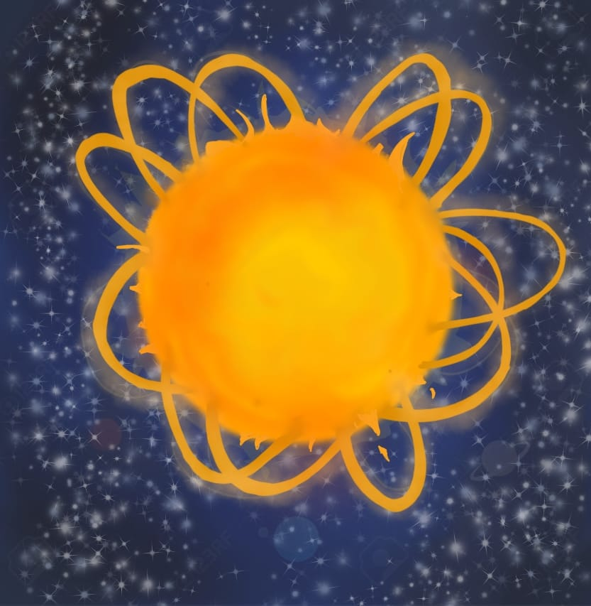
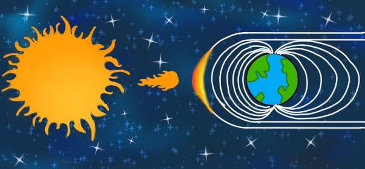
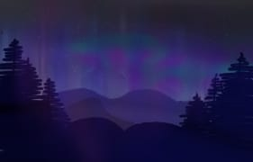
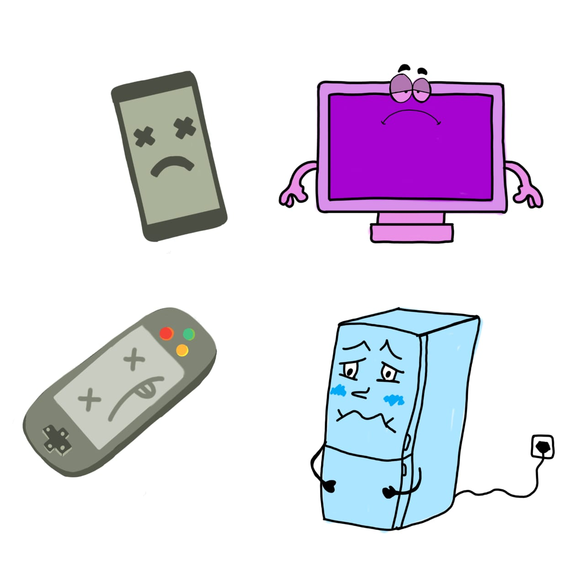
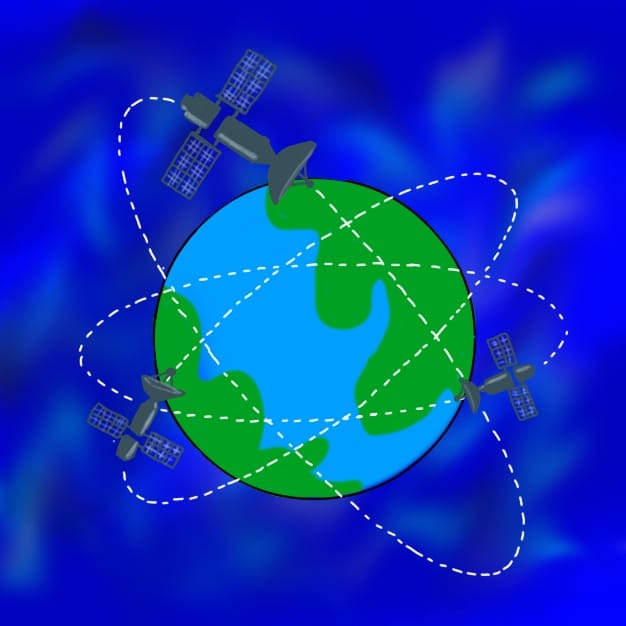
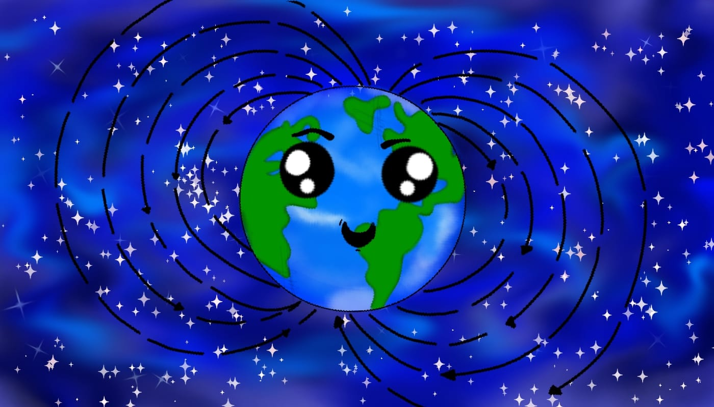

Chapter 1 — The Birth of the Sun
Once upon a time in the heart of the space, there was a giant star that we called the sun; it was born from a very big cloud, that was so heavy that its own weight caused it to squeeze and get smaller. It started spinning very very fast, so fast that it flattened into a hot, flat circle. As time passed it turned into the sun..
Chapter 2 — Stella's Storm
My name is Stella, I am a solar flare. I'm going to explain how my existence affects the Earth!
One day the sun got very angry because it was too hot, so it expelled particles, energy, material and magnetic fields towards the solar system causing a solar storm that looked like a mess of hair.
Chapter 3 — What is Space Weather?
Space weather is the activity between the Sun and near-Earth space that can affect society. The Sun constantly releases particles called **solar wind**. If the Sun blows gently, space weather is calm; if it blows hard, space weather becomes unsettled.
Chapter 4 — Effects on Earth and Technology
During the first 8 minutes of an intense flare, radiation (like X-rays) is emitted that can heat the ionosphere and cause interference in HF radio signals.
Flares and Coronal Mass Ejections (CMEs) can also damage *electronic systems*, affect satellites, GPS, and even hospital equipment.
 Short Quiz
Chapter 5 — Monitoring and Forecasting
Humans have placed satellites and observation centers to monitor the Sun. Some missions and agencies that help predict and issue alerts are:
- **STEREO** — NASA mission with two satellites.
- **NOAA** — Space Weather Prediction Center.
Thanks to these tools, measures can be taken to protect satellites, power grids, and sensitive equipment.
End — Stella's Reflection
Ah (Stella sighs) — although I might be evil in the story, Earth is protected by its magnetic field. If it didn't exist, many electronic devices would be instantly damaged. So, Stella flew across the universe and left those humans on Earth in peace.
Thank you for reading! Do you want to repeat, listen, or review the quiz once more?